PC Watch
https://pc.watch.impress.co.jp
PC/テクノロジーの最新情報、レポート等でPC業界を先取り
フィード
【今すぐ読みたい！人気記事】ミニPCを持ち運びたいワガママを叶える！モバイル環境で快適に使うための周辺機器 - PC Watch
PC Watch
コンパクトで軽く、持ち運びもしやすいミニPCを、モバイル環境で使ってみたいと考えるユーザーもいるだろう。特に自宅やオフィスで使っているメインPCをそのまま持ち出すなら、今までのように複数台のPCで環境を揃えたり、データを同期して作業を継続しやすくする手間もいらない。
18時間前
【今すぐ読みたい！人気記事】3千円程度で狭いデスクが激変！しかも簡単！「後付けキーボードスライダー」をDIYしてみた - PC Watch
PC Watch
自宅でのテレワークがメインだけれど、狭いデスクでがんばって仕事している人もいるのではないだろうか。もっと広々としたデスクで作業したい。でも、部屋の広さを考えると大きなデスクに変えるのは難しい、みたいな事情もあるかもしれない。
18時間前
Copilot内でWordもExcelもコード作成も。名称統一でChatGPT対抗 2
2
PC Watch
WordやExcelのファイル作成からアプリのコード開発まで、1つの「Copilot」アプリの中で行なえるようになる。Microsoftは「Copilot September Event」というCopilotの新戦略に関する記者会見を開催し、CopilotをMicrosoft 365、Microsoft 365 Apps、Dynamics 365、Agent 365などといったさまざまな業務システムの入り口として展開していくと説明した。
1日前
Webカメラなのにスタジオ品質、Razer「Kiyo V2 Pro」 2
PC Watch
Webカメラだけど、スタジオ品質。Razerは9月24日(米国時間)、ゲーマーやストリーマー、クリエイターといったプロ向けの4K Webカメラ「Razer Kiyo V2 Pro」を発売した。直販価格は5万1,980円。
1日前
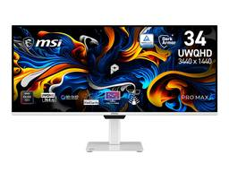
MSI、RGBストライプの第5世代QD-OLED採用34型ウルトラワイドモニター
PC Watch
文字のにじみを抑えるRGBストライプ構造のQD-OLEDパネルを採用した、ウルトラワイドモニターが登場した。エムエスアイコンピュータージャパンは、34型ウルトラワイドモニター「PRO MAX 341QPXW14G」を10月1日に発売する。価格はオープンプライスで、実売予想価格は19万2,300円前後の見込み。
1日前
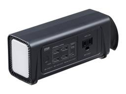
コンセントが持ち歩ける、リン酸鉄のモバイルバッテリ 24
PC Watch
コンセントを備えながら、飛行機にも持ち込めるモバイルバッテリが登場。サンワサプライは、リン酸鉄リチウムイオン電池を採用した24,000mAh(76.8Wh)のモバイルバッテリ「BTL-RDC46」を発売した。サンワダイレクトでの直販価格は3万2,880円。
2日前
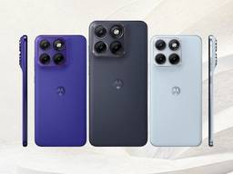
7,000mAhで2日間動作！なのに193gしかないスマホ「motorola edge 70 fusion」 3
PC Watch
このスマホさえあれば、モバイルバッテリを持ち歩く必要がないだろう。モトローラ・モビリティ・ジャパンは、Androidスマートフォン「motorola edge 70 fusion」を10月23日に発売する。直販価格は7万9,800円。9月25日から予約を受け付けている。
2日前
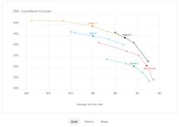
法務と電気工学に強い「Grok 4.7」、価格は据え置き 1
PC Watch
コーディングや長時間のタスクをより粘り強くこなすAIモデルが登場した。SpaceXAIは9月21日(現地時間)、コーディングおよびナレッジワーク向けのAIモデル「Grok 4.7」を発表した。同日よりCursorや「Grok Build」、Grok API経由で利用可能となっている。API価格は入力100万トークンあたり2ドル(約316円、1ドル=約158円換算)から、出力100万トークンあたり6ドル(約948円)から。
2日前
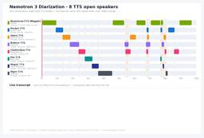
AI議事録の「誰の発言か分からん」を解決。0.1B「Nemotron 3 Diarization」無償公開 164
PC Watch
会議の録音を文字起こししたら、どれが誰の発言か分からない——。この「誰がいつ話したか」の判定を、パラメータ数わずか0.1B(1億)のAIモデル「Nemotron 3 Diarization」を、NVIDIAが9月24日(日本時間)に無償公開した。声が重なる場面でも最大8人の話者を追跡できる。オープンウェイト(モデルの重み)はHugging Faceからダウンロードでき、商用利用も認められる。
2日前
【本日みつけたお買い得品】AGFのドリップパック型インスタントコーヒーが約400円オトク
PC Watch
Amazonにおいて、AGFのドリップパック型インスタントコーヒー「ちょっと贅沢な珈琲店」のモカブレンドテイスト8袋パック「AGF ちょっと贅沢な珈琲店 レギュラーコーヒー ドリップパック モカブレンド 8袋」が直近価格から421円引きとなる716円で販売中だ。
2日前
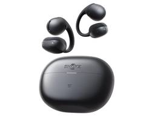
【本日みつけたお買い得品】Shokzのイヤーカフ型ワイヤレスイヤフォン最新モデルが2,989円引き
PC Watch
Amazonにおいて、Shokzのイヤーカフ型ワイヤレスイヤフォンの6月発売の最新エントリーモデル「Shokz OpenDots Air」が、直近価格から2,989円引きとなる1万6,891円で販売されている。
2日前
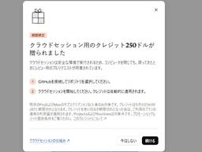
「Claude Code」クラウド実行が正式版、最大250ドル分クレジット配布 3
PC Watch
PCを閉じても、AIがコーディングを続けてくれる機能が正式版になった。Anthropicは9月23日(米国時間)、「Claude Code」をクラウド上で実行する「クラウドセッション」の一般提供を開始した。Pro、Max、Teamプランのユーザーと、プレミアムシートまたはChat + Claude Codeシートを持つEnterpriseプランのユーザーが利用できる。
2日前
【本日みつけたお買い得品】Xiaomiのスナドラ搭載スマホが4,000円引きでオトク！ 1
PC Watch
Amazonにおいて、Xiaomiの「POCO M8 5G 8GB+256GB」が、直近価格より4,000円引きとなる3万2,980円で販売されている。
2日前
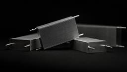
水冷いらずの空冷、ネックは工業用ブロワー級の静圧。Noctuaが挑む 2
PC Watch
Noctuaは9月24日(オーストリア時間)、空冷の性能を大きく向上させる技術「JouleForceマイクロチャネルアレイ」の研究開発において、Forced Physics DCTと共同研究パートナーシップを締結したと発表した。なお、これは特定の製品や発売日に縛られない長期的な協力関係だとしている。
2日前
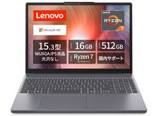
【本日みつけたお買い得品】レノボのRyzen 7搭載ノートPCが4万円引き 1
PC Watch
Amazonにおいて、レノボのビジネスノートPC「IdeaPad Slim 3」(83K7011SJP)が、直近価格の4万円引きとなる12万9,800円で販売されている。
2日前
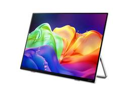
OLEDでDCI-P3 100%、約800gで外へ持ち出せるモバイルモニター
PC Watch
外出先でも色の再現性にこだわりたいクリエイター向けのモバイルモニターが登場した。日本エイサーは9月24日、クリエイター向け16型OLEDパネル採用モバイルモニター「Acer ProDesigner PE160Wsmiuux」を発売した。直販価格は3万8,999円。
2日前
眠っているレトロハードを“バイブコーディング”が復活させます。このシグマリオンIIIみたいにね 4
PC Watch
「23年前のPDAで最新AIが動く」と聞くと、多くの方はまず技術的な興味を持たれるかもしれません。ですが今回の動画で問いかけたいのは、そこではありません。
2日前
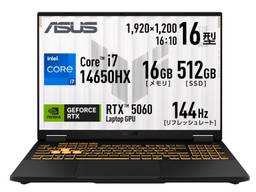
【本日みつけたお買い得品】ASUSのRTX5060搭載ゲーミングノートが6万円引きで販売中
PC Watch
Amazonにおいて、ASUS製ゲーミングノートPC「ASUS TUF Gaming F16 FX608JMI」(FX608JMI-I7R5060321T)が、直近価格から6万円引きとなる28万9,800円で販売されている。
2日前
Windows一本足に幕？Snapdragon X2がLinux対応 2
PC Watch
展示会場にはDebianが動作するSnapdragon X2搭載ノートPCが置かれ、Snapdragon PCはWindows専用ではなくなった。Qualcommは、9月22日から9月24日(現地時間)にかけてSnapdragon Summitを開催中だ。2日目にはサウンド・XR関連やPCに関する基調講演が行なわれた。
2日前
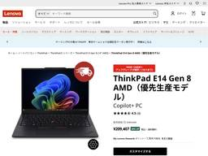
ThinkPadが約18万円引きってアリ？46%オフにメモリ無料増量まで [Sponsored] 1
PC Watch
レノボ・ジャパンは公式ストアにおいて、「決算売り尽くしセールPart2」を開催中だ。最大51%オフの値引きが実施されるなど、多くの製品が特別価格にて販売されている。期間は10月1日まで。
2日前